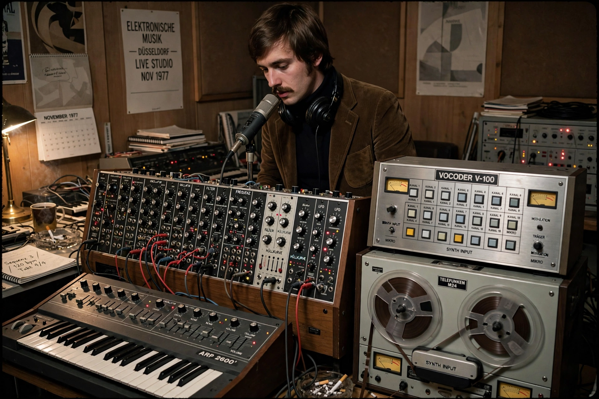

| Florian Schneider | |
|---|---|
 | |
| Born | Florian Schneider-Esleben, 7 April 1947, Öhningen, French occupation zone of Germany |
| Died | 21 April 2020 (aged 73), Düsseldorf, Germany |
| Occupation | Musician |
| Instruments | Flute, synthesizers, electronic percussion, vocals |
| Years active | 1968–2008 |
| Associated acts | Kraftwerk, Organisation |
Florian Schneider-Esleben (7 April 1947 – 21 April 2020) was a German musician and co-founder of the electronic group Kraftwerk, along with Ralf Hütter. Originally a flautist, Schneider developed an interest in electronic sound processing, using treated flute and violin on Kraftwerk's early albums before devoting himself to synthesizers, sequencers and electronic voice effects.
The son of architect Paul Schneider-Esleben, Schneider grew up near Düsseldorf and met Hütter while studying in Remscheid. Their group Organisation released Tone Float in 1970; Kraftwerk followed the same year. Schneider patented designs, experimented with the Vocoder and speech synthesis (his processed voice intones "Radioactivity" and "The Robots"), and co-authored much of the catalogue through Tour de France Soundtracks (2003), the last Kraftwerk album on which he performed.
Schneider stopped touring in 2006 and left Kraftwerk in 2008. In 2015 he released the electronic ode "Stop Plastic Pollution" in support of ocean conservation. He died of cancer in Düsseldorf in April 2020; David Bowie had earlier named the instrumental track "'Heroes'" companion piece "V-2 Schneider" partly in his honour. Schneider's pioneering work with Hütter laid the foundation for synth-pop, hip hop sampling and techno.
Ralf Hütter · Kraftwerk · Krautrock
From Wikipedia, the free encyclopedia (recreated from memory).